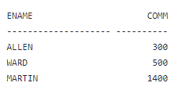
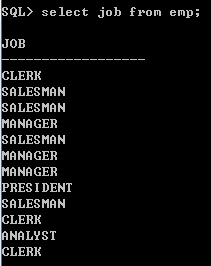
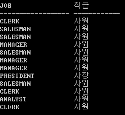
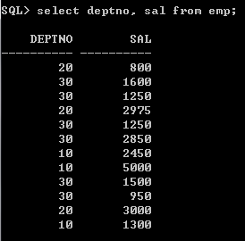
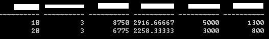
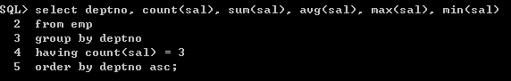
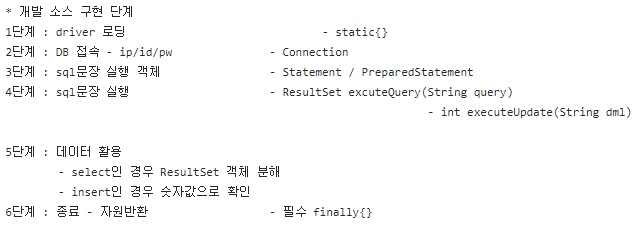

=== 문제 미리보기 방지 ===
")
출처 : 만화 삼국지
=== 문제 미리보기 방지 ===
[문제1]
※ SELECT 문에 대한 설명으로 옳지 않은 것을 모두 고르시오 (선다형)
- 조건식을 활용한 정렬 포함 검색의 쿼리문 순서는 SELECT절 ORDER BY 절 FROM절 WHERE절 순이다.
- 정렬 포함 검색 시 실행 순서는 SELECT절, FROM절, ORDER BY 절 순이다.
- 해당 계정의 모든 table 목록을 검색할 때는 SELECT table FROM ALL 을 사용한다.
- 테이블에서 중복 데이터 제거 후 검색은 distinctive 명령어를 사용한다.
- 테이블을 오름차순으로 검색하고자 할 때 desc 명령어를 사용한다.
정답 및 해설
답 : 1, 2, 3, 4, 5
- SELECT절 FROM절 WHERE절 ORDER BY 절 순이다.
- FROM절 SELECT절 ORDER BY절 순이다.
- SELCT * FROM TAB이다.
- distinct다.
- asc다.
[문제2]
※ SQL의 데이터 타입에 대한 설명으로 옳은 것을
모두 고른 것은?
(선다형)
- VARCHAR2는 가변적인 문자열 타입으로, 한 음절 저장시 3byte를 사용한다.
- DATE는 날짜를 표현한다.
- NUMBEER는 정수를 표현하는 데이터 타입이다.
- NUMBER(5, 3)는 소수점 이하 세 자리를 포함해서 전체 자리수는 5자리로 처리한다는 뜻으로, 2.34는 들어갈 수 있다.
정답 및 해설
답 : ③ B, D
[문제3]
※ 다음은 SQL의 연산식 또는 연산자에 대한 수강생들의 설명이다. 이중 옳게 말한 사람을 모두 고른 것은? (선다형)
- 종성 : 여러 개의 조건에 모두 해당하는지 보고 싶으면 and, 하나라도 만족하는지 보려면 or을 사용하면 됩니다.
- 인철 : between A and B를 사용하면 date값이 A와 B를 포함한 사이에 있는 경우만 검색할 수 있습니다.
- 시찬 : in을 사용하면 여러 값을 동시에 만족시키는 경우를 볼 수 있습니다.
- 영욱 : null 값을 특정한 수치 값으로 변경하고 싶으면 NVL을 사용하면 되고, null인지 아닌지 알아보려면 is나 is not 연산식을 사용합니다.
④ 종성, 인철, 영욱 ⑤ 종성, 인철, 시찬, 영욱
정답 및 해설
답 : ④ 종성, 인철, 영욱
in을 사용하면 여러 값 중 하나를 만족시키는 경우를 볼 수 있다.
예) WHERE COMM NOT IN(300, 500, 1400);

[문제4]
※ 다음 중 LIKE '__A%'를 활용하여 검색했을 경우 검색되지 않는 단어는 무엇인가? (선다형)
- SHAKEYOURBODY
- BLADEMASTER
- HATESPEECH
- WHATTHEHELL
- SHALLWEDANCE
정답 및 해설
답 : ③ HATESPEECH
[문제5]
※ 아래의 함수를 통해 계산한 값을 모두 더했을 때의 값은? (단답형)
- abs(-7)
- round(24, 1)
- trunc(16.547, 0)
- mod(89, 13)
- power(2, 3)
정답 및 해설
답 : 66
7 + 24 + 16 + 11 + 8
[문제6]
※ 결과에 맞게 빈칸을 채우시오. (단답형)
- select [ ](' myweekendisbroken ') from dual; => 'myweekendisbroken'
- select [ ]('KiLLJAVa'), [ ]('iHaTeSQl') from dual; => killjava, IHATESQL
- select [ ]('솔로천국'), [ ]('커플지옥') from dual; => 4, 12
- select [ ]('19/07/21', 4, 2) from dual; => 07
정답 및 해설
답 : TRIM, LOWER, UPPER, LENGTH, LENGTHB, SUBSTR
[문제7]
※ 설명에 맞게 빈칸을 채우시오. (단답형)
- [ ]()는 현재 시스템 날짜에 대한 정보를 제공하는 함수다.
- 특정 개월 수를 더하려면 [ ]를 쓴다.
- 두 날짜 사이의 개월 수를 검색하려면 [ ]를 쓴다.
- 요일을 기준으로 특정 날짜를 검색할 때 [ ]를 쓴다.
- 주어진 날짜의 달 기준으로 가장 마지막 날짜를 구할 때 [ ]를 쓴다.
정답 및 해설
답 : SYSDATE, ADD_MONTHS, MONTHS_BETWEEN, NEXT_DAY, LAST_DAY
[문제8]
※ 아래 결과가 나오는 SQL문을 작성하시오. (서술형)
- 조건 :
 - 결과 :

모범 답안
답 : select job, decode(job, 'PRESIDENT', '사장', '사원') as 직급 from emp;
[문제9]
※ 아래 결과가 나오는 SQL문을 작성하시오. (서술형)
(SQLPLUS를 사용하셔도 좋습니다. SCOTT 계정의 emp 테이블을 사용)
- 조건 :
 - 결과 : max, min, sum, avg, count를 사용

모범 답안
답 :

[문제10]
※ 현재 엔코아의 빅데이터 과정의 담당 강사는 김혜경이다. 그렇다면 JDBC의 개발 소스 구현 1단계부터 6단계까지 적으시오. (서술형)
모범 답안
답 :

1단계 : driver 로딩, 2단계 : DB 접속, 3단계 : sql문장 실행 객체, 4단계 : sql 문장 실행, 5단계 데이터 활용, 6단계 : 종료 (자원반환)